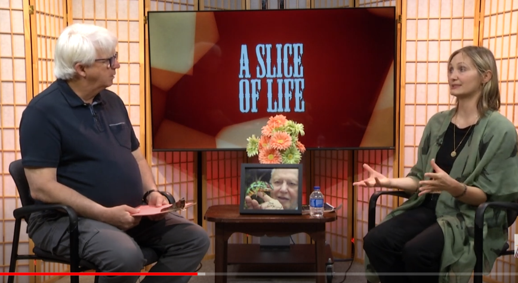

Special Guest, Slice of Life—Episode 9, June 2023
Upcoming
- Better Building By Design VT, Presenter, “Bird-Friendly Building Design," Burlington, VT, May 6, 2026 ~ Link
- American Ornithological Society 2026 Annual Meeting, Presenter, “Linking Science & Empathy in Successful Bird-friendly Building Advocacy," Amherst, MA, August 6, 2026 ~ Link
Past
- Bird-Friendly Buffalo Symposium, Speaker, “Lights Out Policy Benefits: For People and Wildlife," Buffalo, NY, April 23, 2026 ~ Link
- Humane Canada 2026 Animal Summit, Presenter, “Bird-friendly Toronto: How advocacy led to a municipal policybreakthrough in bird conservation," Whistler, B.C., April 20-21, 2026 ~ Link
- Rochester Institute of Technology, Guest Judge, “SMASH THE CRASH: An Environmental Initiative to End Bird-Window Collisions in Rochester," April 10, 2026 ~ Link
- Massachusetts Liberal Arts College 'Green Living Seminar', Speaker, “How Laws Protecting Birds Strengthen Human Communities," North Adams, MA, April 8, 2026 ~ Link
- Environment for the Americas, Presenter, World Migratory Bird Day, “Policy for Birds,” October 16, 2025 ~ Link
- 13th Annual Nature-Society Workshop, Presenter, “Bird-friendly Toronto,” October 3, 2025
- AIA Vermont, Presenter, “Bird-friendly Design for Architects,” September 18, 2025 ~ Recording
- Onondaga Audubon Society, Presenter, “The Beauty of Bird Friendly Design,” September 9, 2025 ~ Recording
- Forum for Contemplative Ecology, Guest Speaker, “Migratory Birds & the Night Sky,” August 4, 2025 ~ Recording
- Audubon NY & CT, Spring Council Meeting, Presenter “Lights Out for Birds,” April 4-6, 2025
- Lights Out Greenwich, Presenter, “The Consequences of Light Pollution,” June 7, 2024 ~ Recording
- Pequot Library, Lead Organizer & Presenter, “Living Bird-Friendly Series,” April 12-13, 2024 ~ Link
- Audubon Rhode Island, Presenter, “Bird-Friendly Building Policy: A Look at New U.S. City & State Laws,” February 4, 2024 ~ Recording
- Connecticut Audubon Society, Presenter “Making Connecticut’s Buildings Safer for Birds,” January 18, 2024 ~ Recording
- AIA CT, Presenter, “Bird-Friendly Building: Designing Safer Buildings for Birds,” November 7, 2023 ~ Link
- Menunkatuck Audubon Society, Presenter, “The Wonders and Perils of Spring Bird Migration in the Northeast,” May 12, 2024 ~ Recording
- Valley Shore Community TV A Slice of Life, Special Guest, Episode 9 - “Lights Out,” June 12, 2023 ~ Recording
- Liz Wexler Show, Special Guest, “Lights Out! Help save the birds!,” April 20, 2023 ~ Recording
- Branford Rotary Club, Speaker, “Lights Out CT,” April 4, 2023
- CT General Assembly Environmental Committee, Expert Testimony, February 15, 2023 ~ Recording (min 2:39:26)